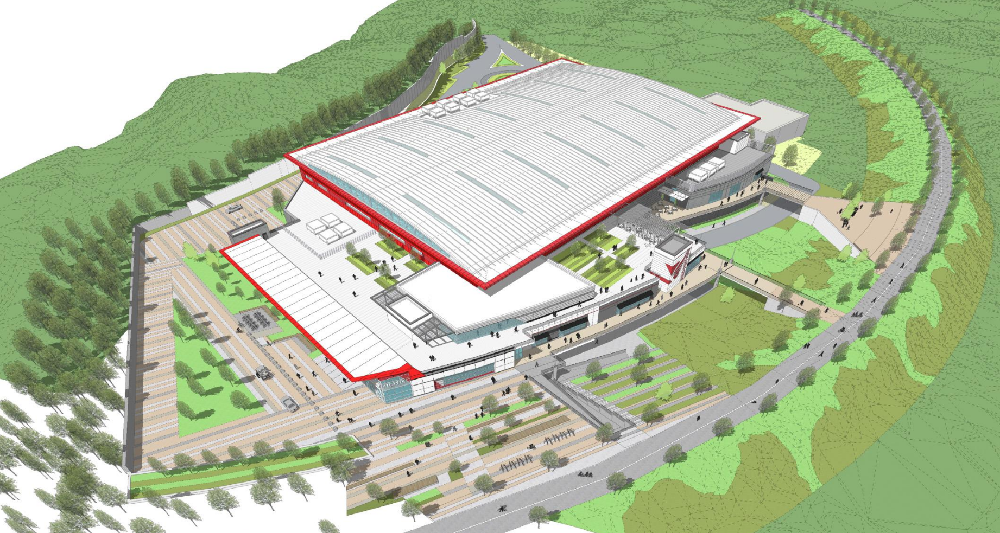
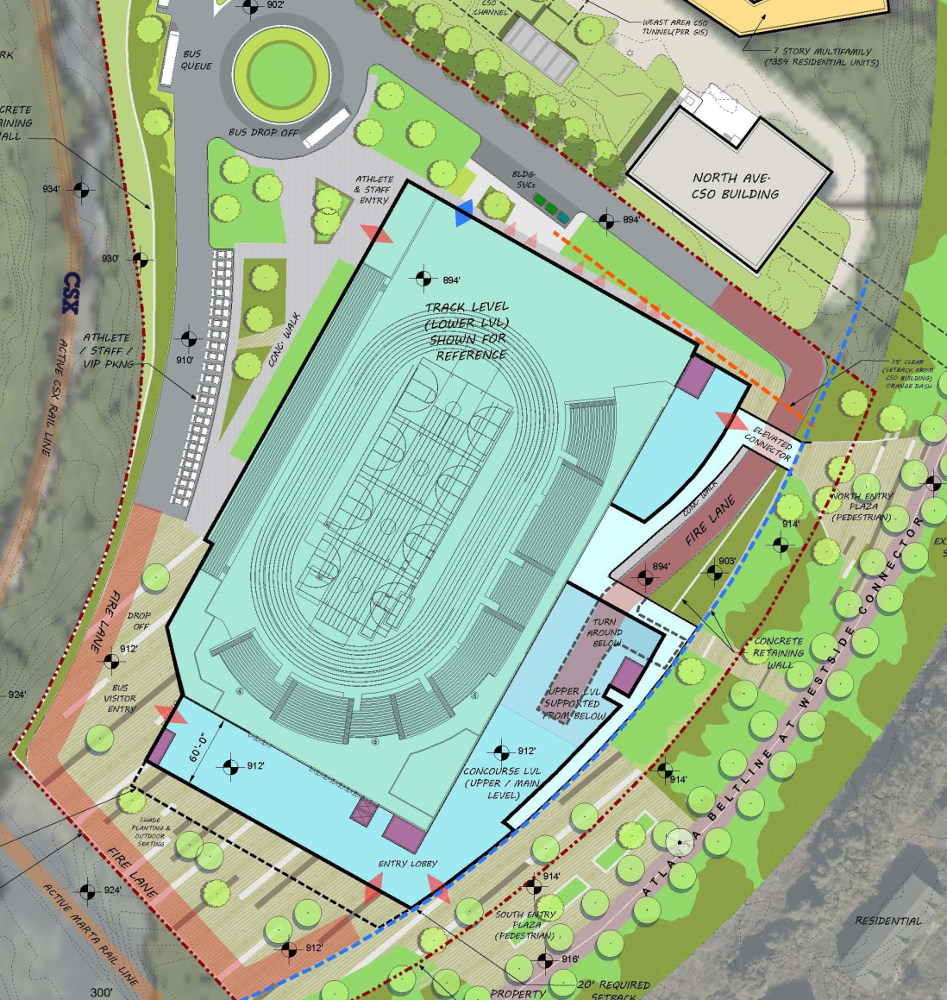

Atlanta Track Club's desire to build a track is running into the problem of trying to build something with money they don't have on land they don't own. According to these records, they have donors that are willing to back the project but wish to see a site selected before committing money. The solution to this has been to seek public land starting with the city.
Efforts from at least 2023 center largely on a beltline adjacent site on the Westside. It progressed significantly: ATC supplied the Mayor’s Office with a site plan, a formal offer letter, financial pro formas and a project presentation. Ultimately, the effort appears to have stalled because relocating existing City operations became too expensive. City officials put the replacement cost of nine affected buildings at roughly $48 million, exclusive of land. When that site became difficult, ATC and City officials began exploring alternatives, including property owned by MARTA, Atlanta Urban Development Co, as well as land previously donated by Microsoft and privately owned land.

The earlier site is useful because it shows what ATC believed the indoor center actually required. Its concept plan identified a pie shaped 8.33-acre parcel near Bankhead MARTA and with direct access to the BeltLine. The awkward shape reduced the amount of land available for the building. Still, the site was large enough to fit the indoor center and its supporting uses onto that property. It has minimal parking for staff usage and no onsite parking for events or public users. This design shows us what ATC sees as a viable facility and supports statements that the first Summerhill renderings represented maximal usage of the land and not what ATC needs. This rendering shows that the facility can fit either on Cheney field north of the outdoor track or the Martin/Little street lot to the west.

Putting myself in the shoes of ATC, the immediate and obvious next step is to abandon the parking lot and shrink the project so that it fits on the Martin St or Cheney lot. This can be used to portrary modifying the site to address a long list of neighborhood feedback. No new parking, Ami street stays, room for PathFC, significantly reduced loss of greenspace, and better economics on the groud lease. The equally obvious choice is to put forth a proposal for the Martin/Little street property. The history of the Cheney site and its slated use as a stormwater vault to comply with a federal consent decree complicate its use. Martin/Little street comes with no such issues, is closer to potential parking, and the geography allows parking underneath the facility along Ami street with minimal ground work.
There is a much larger benefit. As the feedback sessions show -- a topic that will be discussed in a future commentary -- the choice to say no to the track is not being presented to the neighborhood. What is being asked is how the neighborhood would like the proposal modified. By reducing the land usage in half ATC will argue that it has addressed the community feedback it received. With competing Martin St vs Cheney proposals the overwhelming topic of discussion will be which of those are better. The discussion that should be happening will fall to the wayside. Namely, how does the community choose the best usage of the most imporant piece of land in Summerhill?